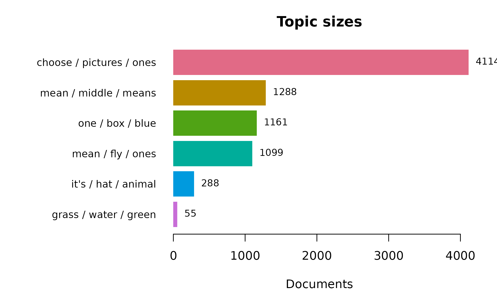
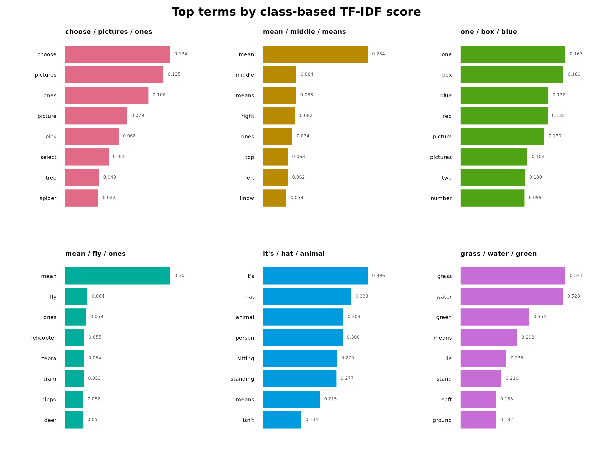
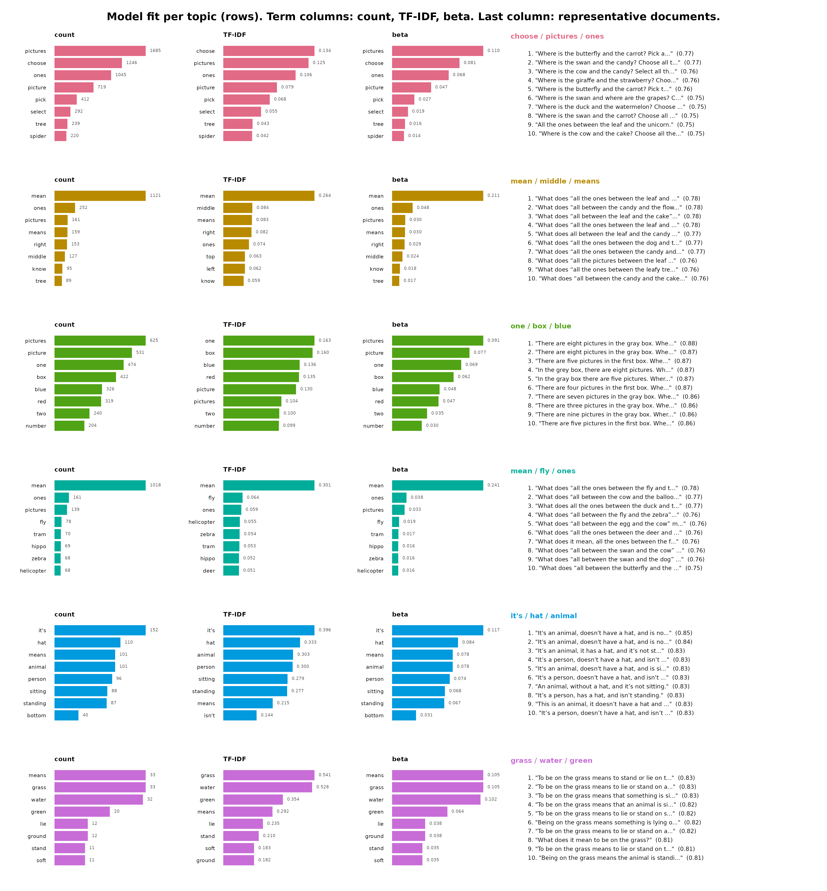

Semantic Topics in Levebee AI Mathematics Feedback — an sbert Tutorial
sbert 0.5.2
2026-08-08
Source:vignettes/articles/levebee_vignette.Rmd
levebee_vignette.RmdWhy this tutorial
The feedback_translations dataset bundled with
sbert contains 8,757 AI-generated feedback messages
from the Levebee mathematics application, translated into English from
ten source languages. Nobody can read nearly nine thousand messages, and
many repeat verbatim — “Try again.” is the most common, appearing 11
times — so simple frequency lists tell you about templates, not content.
Topic modeling answers the question the raw data cannot: what kinds
of feedback does the system actually give, and in what
proportions?
The answer has to survive scrutiny, so every step here is deterministic: rerunning this document reproduces every number, bar, and sentence exactly. The tutorial builds one six-topic model and then inspects it from three deliberately different angles:
- Model quality — coherence and diversity, so you know which topics to trust before interpreting any of them.
- Two keyword views per topic — raw within-topic counts (what the topic says most) against class-based TF-IDF (what the topic alone says). These are different lists by construction, and the disagreement between them is itself informative.
- Representative sentences — the centroid-nearest messages, which are the auditable evidence that a topic label means what it claims.
| Component | Verb | Question it answers |
|---|---|---|
| Topic model | topics() |
What groups exist, and how big are they? |
| Evaluation |
coherence(), topic_diversity()
|
Which topics are trustworthy? |
| Frequent keywords | terms(sort_by = "beta") |
What does each topic talk about most? |
| Distinctive keywords | topic_model$terms |
What does each topic talk about that others do not? |
| Evidence | topic_model$representatives |
Do real messages support the label? |
Fourteen revision-pinned models are available; this tutorial uses the
default, all-MiniLM-L6-v2 (the field’s standard
quality-per-megabyte English embedder). The menu, with each model’s
dimension, input limit, language coverage, and download size:
models()## model dimensions max_tokens languages
## 1 all-MiniLM-L6-v2 384 256 English
## 2 all-MiniLM-L12-v2 384 128 English
## 3 paraphrase-MiniLM-L3-v2 384 128 English
## 4 multi-qa-MiniLM-L6-cos-v1 384 512 English
## 5 paraphrase-multilingual-MiniLM-L12-v2 384 128 50+ languages
## 6 all-mpnet-base-v2 768 384 English
## 7 paraphrase-multilingual-mpnet-base-v2 768 128 50+ languages
## 8 bge-small-en-v1.5 384 512 English
## 9 bge-base-en-v1.5 768 512 English
## 10 multilingual-e5-small 384 512 100+ languages
## 11 nomic-embed-text-v1.5 768 8192 English
## 12 jina-embeddings-v2-small-en 512 8192 English
## 13 mxbai-embed-large-v1 1024 512 English
## 14 potion-base-8M 256 1000000 English
## size_mb
## 1 90.9
## 2 133.6
## 3 69.5
## 4 90.9
## 5 479.4
## 6 436.3
## 7 1119.2
## 8 133.8
## 9 436.5
## 10 487.4
## 11 548.0
## 12 130.5
## 13 1337.6
## 14 30.9The corpus, deduplicated
Embedding the same string twice wastes computation and — more
importantly — lets repeated templates skew the clustering geometry:
every copy of a message like “Try again.” acts as another point pulling
on the same centroid. dedupe() therefore collapses the
corpus to its distinct non-blank messages (each kind votes once) while
keeping the row frequencies, which return as weights when sizes are
reported.
## [1] 8005Three explicit steps turn the corpus into numbers, and each exists
for a reason. Called without arguments, every model function uses the
package default, all-MiniLM-L6-v2 — a 6-layer distilled
English model that is the field’s standard quality-per-megabyte starter
(models() lists the other thirteen pinned options).
model_download() is the only step that touches the network:
it fetches the model’s ONNX graph (90.4 MB) and tokenizer into the local
cache, locked to one immutable Hugging Face revision and refused unless
every byte matches the SHA-256 hashes pinned inside the package — so the
model you run today is provably the model you run next year. Once the
files are installed the call is a no-op. load_model() then
builds the in-memory model from those verified files: the Rust
tokenizer, the ONNX inference session, and the model’s own settings (384
dimensions, 256-token limit, mean pooling).
encode() does the actual work: each message is tokenized
into word pieces, run through the network (one vector per token),
mean-pooled into one vector per message with padding masked out, and
L2-normalized. The normalization is what makes everything downstream
cheap — on unit vectors, cosine similarity is a plain dot product, which
is exactly what the k-means clustering and the centroid distances in the
panels below rely on. The result is an 8,005 × 384 matrix, numerically
identical to Python SentenceTransformers output and
bit-identical on every rerun — which is why this tutorial recomputes it
(about ten seconds) instead of shipping a cache file.
model_download()
minilm <- load_model()
embeddings <- encode(corpus$text, model = minilm)The six-topic model
Six topics is a reviewed choice for this corpus, not an algorithmic
guess — sbert deliberately refuses to pick
n_topics for you, because the right granularity depends on
what the analysis is for (here: an editorial review of feedback
types, where six kinds are actionable and sixty are not).
topic_model <- topics(
corpus$text,
n_topics = 6,
embeddings = embeddings,
n_terms = 8,
n_representatives = 5
)
topic_model## <sbert_topic_model>
## documents: 8005
## topics: 6
## model: precomputed embeddings
## algorithm: deterministic k-means (Lloyd)
## topic sizes: 4114, 1288, 1161, 1099, 288, 55
## between/total SS: 15.2%Should you trust these topics?
Interpretation comes after evaluation, because a beautifully labeled topic with poor coherence is a story about noise. NPMI coherence asks whether a topic’s top terms actually co-occur in its messages (+1 = always together, −1 = never); diversity asks whether topics share their vocabulary or own it.
summary(topic_model)## Semantic topic model summary
## documents: 8005
## topics: 6
## model: precomputed embeddings
## between/total SS: 15.2%
## mean npmi coherence: 0.1267
## topic topic_diversity: 0.854 (top 10 terms)
##
## topic label n_documents proportion coherence
## 1 choose / pictures / ones 4114 0.513929 -0.184413
## 2 mean / middle / means 1288 0.160899 0.005509
## 3 one / box / blue 1161 0.145034 0.221195
## 4 mean / fly / ones 1099 0.137289 -0.083529
## 5 it's / hat / animal 288 0.035978 0.483772
## 6 grass / water / green 55 0.006871 0.317913
coherence(topic_model, measure = "npmi")## topic label measure n_terms coherence
## 1 1 choose / pictures / ones npmi 8 -0.184412886
## 2 2 mean / middle / means npmi 8 0.005508961
## 3 3 one / box / blue npmi 8 0.221194946
## 4 4 mean / fly / ones npmi 8 -0.083528740
## 5 5 it's / hat / animal npmi 8 0.483772393
## 6 6 grass / water / green npmi 8 0.317913224Carry these numbers into the per-topic panels below: the topics with the highest NPMI are the rigid instructional templates (regular phrasing is exactly what co-occurrence statistics reward), and any topic with visibly lower coherence should be read through its representative sentences rather than its keywords.
Size on two scales
The model counts distinct messages, but the application sent
some messages hundreds of times, so editorial priority follows the
weighted share, not the distinct share. topic_sizes()
reports both scales in one call; the gap between proportion
and weighted_share measures how template-driven each topic
is — a topic whose weighted share far exceeds its distinct share is a
small repertoire of heavily reused messages.
plot(topic_model, type = "sizes")
topic_sizes(topic_model, weights = corpus$n)## topic label n_documents proportion n_weighted
## 1 1 choose / pictures / ones 4114 0.513928795 4390
## 2 2 mean / middle / means 1288 0.160899438 1347
## 3 3 one / box / blue 1161 0.145034354 1494
## 4 4 mean / fly / ones 1099 0.137289194 1128
## 5 5 it's / hat / animal 288 0.035977514 326
## 6 6 grass / water / green 55 0.006870706 72
## weighted_share
## 1 0.501313235
## 2 0.153819801
## 3 0.170606372
## 4 0.128811237
## 5 0.037227361
## 6 0.008221994Two keyword views, one topic
terms(sort_by = "beta") returns the empirical
probability of each word given the topic — the generative view,
dominated by whatever the topic says most often. The class-based TF-IDF
scores in topic_model$terms are the discriminative
view: they promote words this topic uses and others do not, and demote
the corpus-wide vocabulary (“picture”, “choose”) that every feedback
message shares. Neither list is “the” keywords; a topic is characterized
by the pair. When the two lists agree, the topic has a vocabulary of its
own; when they disagree, the counts list is telling you about the corpus
and only the TF-IDF list about the topic.
## topic label term rank score frequency beta
## 1 1 choose / pictures / ones pictures 1 0.12543830 1685 0.11003004
## 2 1 choose / pictures / ones choose 2 0.13402664 1246 0.08136346
## 3 1 choose / pictures / ones ones 3 0.10629994 1045 0.06823821
## 4 1 choose / pictures / ones picture 4 0.07892443 719 0.04695050
## 5 1 choose / pictures / ones pick 5 0.06819370 412 0.02690349
## 6 1 choose / pictures / ones select 6 0.05547671 292 0.01906752
## 7 1 choose / pictures / ones tree 7 0.04311658 239 0.01560663
## 8 1 choose / pictures / ones spider 8 0.04240590 220 0.01436594## topic label term rank score frequency
## 1 1 choose / pictures / ones choose 1 0.13402664 1246
## 2 1 choose / pictures / ones pictures 2 0.12543830 1685
## 3 1 choose / pictures / ones ones 3 0.10629994 1045
## 4 1 choose / pictures / ones picture 4 0.07892443 719
## 5 1 choose / pictures / ones pick 5 0.06819370 412
## 6 1 choose / pictures / ones select 6 0.05547671 292
## 7 1 choose / pictures / ones tree 7 0.04311658 239
## 8 1 choose / pictures / ones spider 8 0.04240590 220The topics at a glance
The two-panel drawing this tutorial once carried by hand is now built
into the package. plot(topic_model, type = "terms") shows
each topic’s distinctive class-based TF-IDF terms, each bar annotated
with its score:
plot(topic_model, type = "terms")
type = "fit" is the whole per-topic report in one
figure: for every topic (one row) it draws all three keyword views — raw
within-topic count, class-based TF-IDF, and generative probability
(beta) — followed by the topic’s centroid-nearest messages with their
cosine similarity to the centroid. Reading across a row shows a label,
why it is distinctive, and the evidence that supports it.
plot(topic_model, type = "fit", n_terms = 8, n_representatives = 10)
The document text is clipped to fit; for the full, untruncated evidence behind each topic, ask for the representatives directly:## topic rank
## 1 1 1
## 2 1 2
## 6 2 1
## 7 2 2
## 11 3 1
## 12 3 2
## 16 4 1
## 17 4 2
## 21 5 1
## 22 5 2
## 26 6 1
## 27 6 2
## text
## 1 Where is the butterfly and the carrot? Pick all the pictures that are between them.
## 2 Where is the swan and the candy? Choose all the pictures that are between them.
## 6 What does “all the ones between the leaf and the unicorn” mean?
## 7 What does “all between the candy and the flower” mean?
## 11 There are eight pictures in the gray box. Where is there one fewer picture?
## 12 There are eight pictures in the gray box. Where are there two fewer pictures?
## 16 What does “all the ones between the fly and the deer” mean?
## 17 What does "all between the cow and the balloon" mean?
## 21 It's an animal, doesn't have a hat, and is not sitting.
## 22 It's an animal, doesn't have a hat, and is not standing.
## 26 To be on the grass means to stand or lie on the soft green ground outside.
## 27 To be on the grass means to lie or stand on a soft green thing that grows on the ground.
## distance
## 1 0.2301158
## 2 0.2317346
## 6 0.2163106
## 7 0.2185925
## 11 0.1244105
## 12 0.1276533
## 16 0.2234504
## 17 0.2288911
## 21 0.1548222
## 22 0.1596835
## 26 0.1740130
## 27 0.1745096Where to go from here
The model built here is reusable, not just describable.
predict() assigns any new feedback message to these six
topics without refitting; topic_membership() replaces the
hard assignment with graded probabilities when a message sits between
topics; and topic_gamma() combined with
segment() shows when a single multi-sentence message spans
several feedback types. For multilingual work on the source
messages (the feedback column spans ten languages), change
one argument —
encode(corpus$text, model = "paraphrase-multilingual-MiniLM-L12-v2")
— and the rest of this document runs unchanged.
## [1] "R version 4.6.1 (2026-06-24)"